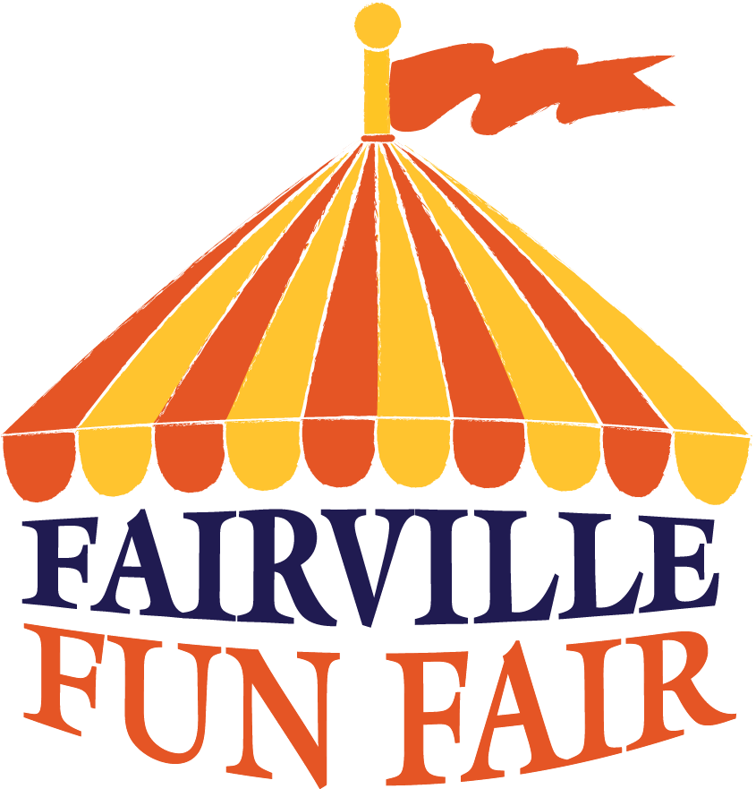
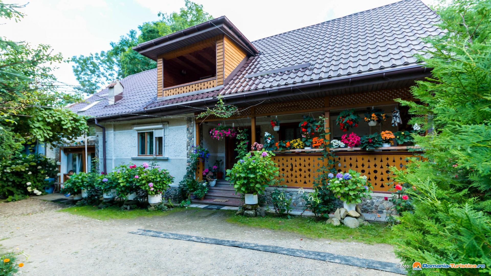

|  Atractii |
|---|
-Pensiunea "La Robertini" va pune la dispozitie numeroase atractii atat turistice cat si show-uri culinare cu cei mai cunoscuti "Chefi" ai Brasovului,dar si show-uri,petreceri pentru cei ce doresc sa se relaxeze cu cei mici
Una din atractiile turistice pe care vi le pregatim este renumita Manastire Rupestra , un loc pentru cei ce vor dori sa se relaxeze si sa petreaca un moment de liniste in celebra grota unde lumea spune ca orice dorinta pusa va deveni realitate.